Hướng dẫn: Kho vận
Dành cho người đóng hàng (chị Thương). Hướng dẫn trên điện thoại: đóng đơn, báo hết hàng, nhắn shop, nhận hàng trả về, nhập hàng mới và kiểm kho.
Video có lời đọc tiếng Việt và phụ đề. Thời lượng khoảng 3 phút 15 giây. Tải video về máy
1. Đăng nhập2. Màn hình Cần đóng3. Danh sách lấy hàng4. Đóng đơn5. Bấm nhầm? Hoàn tác6. Đơn nhiều đôi7. Đã đóng hôm nay8. Nhắn tin với Shop9. Xem lại đơn đã đóng10. Tồn kho11. Trả hàng về12. Nhập hàng mới13. Kiểm kho cuối tháng
1. Đăng nhập
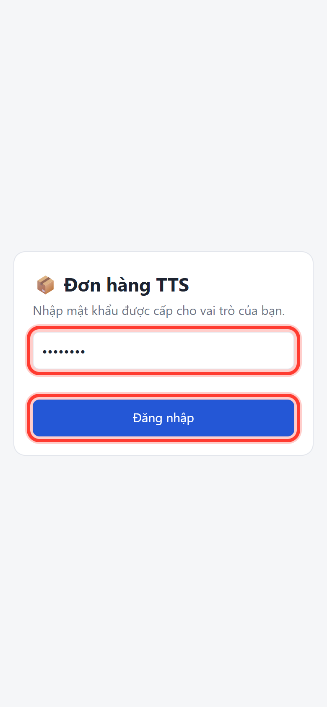
- Mở link app, gõ mật khẩu của Kho, bấm nút xanh "Đăng nhập".
- Điện thoại tự nhớ mật khẩu, lần sau mở là vào thẳng.
2. Màn hình Cần đóng
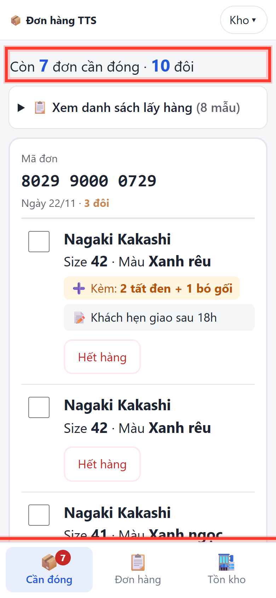
- Mở app là vào ngay "Cần đóng". Dòng trên cùng: còn mấy đơn, mấy đôi.
- Dưới đáy có 3 nút: 📦 Cần đóng, 📋 Đơn hàng, 🏬 Tồn kho.
- Số màu đỏ trên nút Cần đóng = số đơn đang chờ đóng.
3. Danh sách lấy hàng
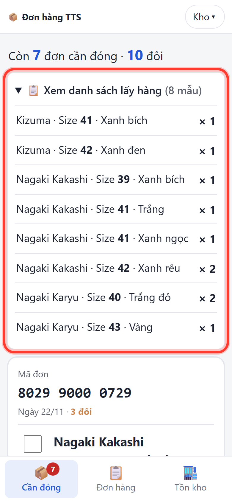
- Bấm "📋 Xem danh sách lấy hàng".
- Mỗi dòng: mẫu, size, màu và số đôi cần lấy. Đi lấy một lượt cho nhanh.
4. Đóng đơn
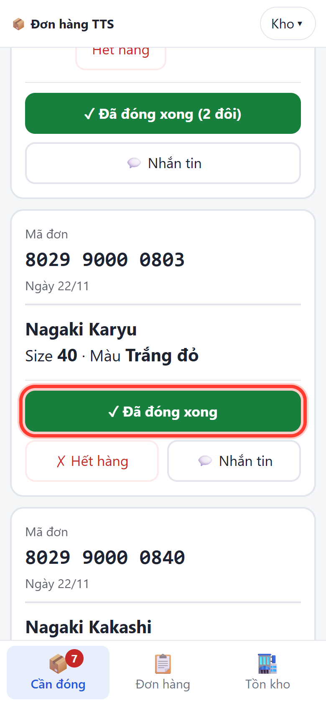
- Mỗi khung là một đơn. Số to = mã đơn (chia nhóm 4 số cho dễ dò).
- Bên dưới: tên mẫu, Size, Màu. Đồ đóng kèm ghi trong ô màu vàng. Ghi chú của shop có biểu tượng 📝.
- Đóng hàng xong: bấm nút xanh "✓ Đã đóng xong". Đơn đó biến khỏi danh sách.
5. Bấm nhầm? Hoàn tác
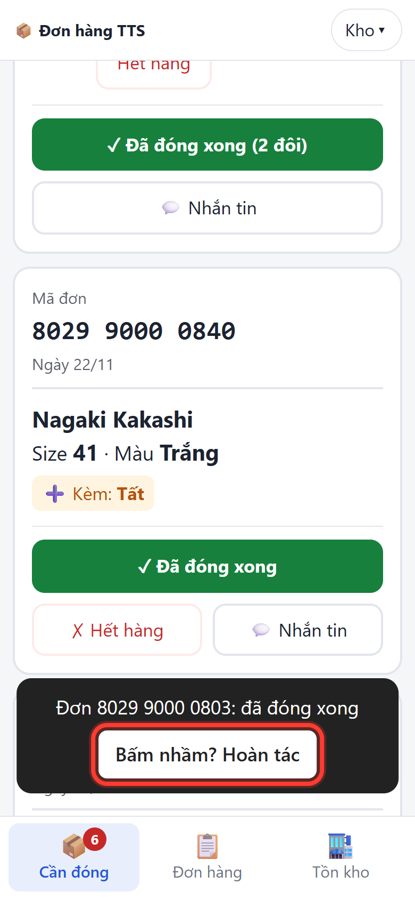
- Sau khi bấm, app hiện thông báo màu đen ở dưới, khoảng 8 giây.
- Bấm nhầm: bấm nút trắng "Bấm nhầm? Hoàn tác". Đơn quay lại như cũ.
6. Đơn nhiều đôi
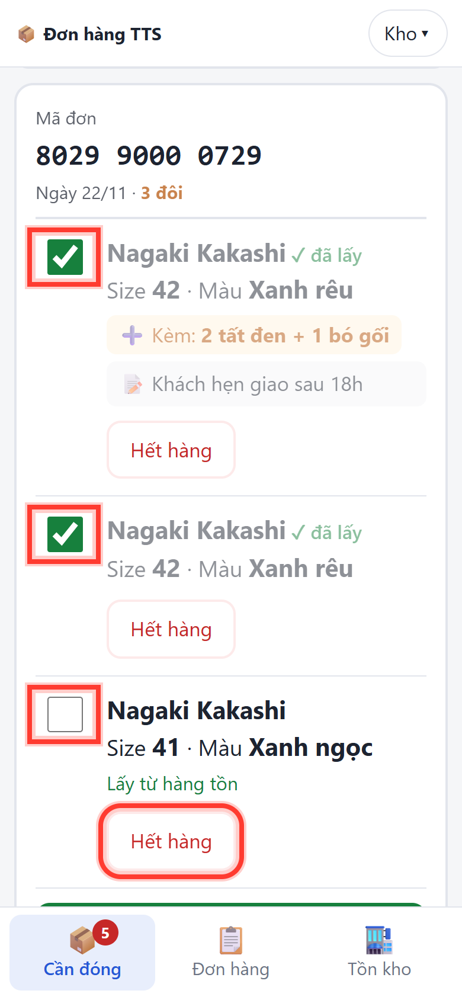
- Mỗi đôi có một ô vuông. Lấy được đôi nào thì tick ô đó (hiện "✓ đã lấy").
- Đôi nào không có hàng: bấm "Hết hàng" ngay dưới đôi đó. Shop sẽ thấy.
- Đơn chỉ một đôi mà hết hàng: bấm "✗ Hết hàng" cạnh nút Nhắn tin.
- Đủ hết: bấm nút xanh "Đã đóng xong".
7. Đã đóng hôm nay
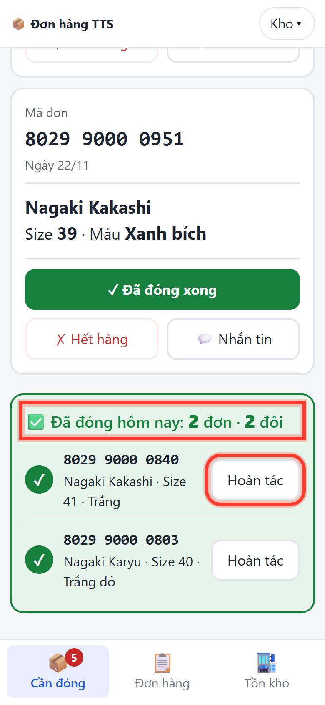
- Kéo xuống cuối trang: khung xanh "✅ Đã đóng hôm nay" ghi số đơn, số đôi.
- Muốn sửa đơn nào thì bấm "Hoàn tác" ở đơn đó.
8. Nhắn tin với Shop
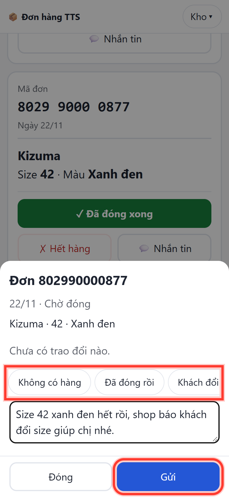
- Bấm "💬 Nhắn tin" ở đơn cần hỏi.
- Bấm một câu có sẵn (Không có hàng, Đã đóng rồi…) hoặc tự gõ.
- Bấm nút xanh "Gửi". Shop thấy ngay trên đơn đó.
9. Xem lại đơn đã đóng
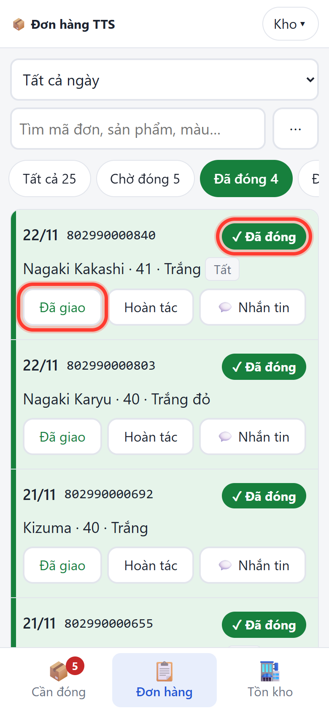
- Bấm "📋 Đơn hàng" ở đáy màn hình. Bấm nhãn "Đã đóng" để chỉ xem đơn đã đóng.
- Đơn đã đóng có nền xanh lá và nhãn "✓ Đã đóng".
- Giao cho bên vận chuyển xong: bấm "Đã giao".
10. Tồn kho
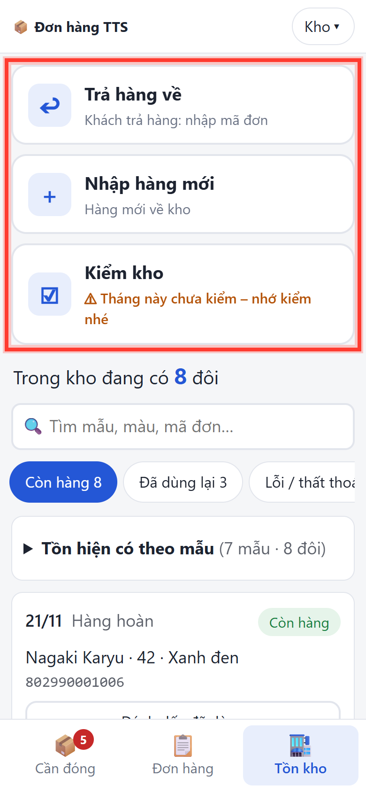
- Bấm "🏬 Tồn kho" ở đáy màn hình.
- Ba nút lớn: ↩ Trả hàng về (khách trả), ＋ Nhập hàng mới (hàng mới về), ☑ Kiểm kho (đếm cuối tháng).
- Bên dưới ghi trong kho đang có bao nhiêu đôi.
11. Trả hàng về
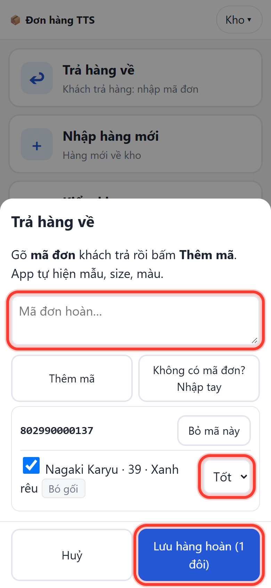
- Bấm "↩ Trả hàng về", gõ mã đơn, bấm "Thêm mã".
- App tự hiện mẫu, size, màu. Chọn "Tốt" (còn dùng được) hoặc "Lỗi" (hỏng).
- Bấm nút xanh "Lưu hàng hoàn".
- Không có mã đơn: bấm "Không có mã đơn? Nhập tay".
12. Nhập hàng mới
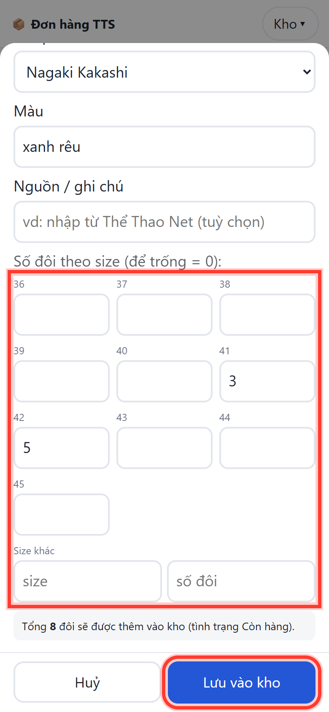
- Bấm "＋ Nhập hàng mới". Chọn mẫu, gõ màu.
- Gõ số đôi vào ô của từng size. Ô để trống = không có.
- Bấm nút xanh "Lưu vào kho".
13. Kiểm kho cuối tháng
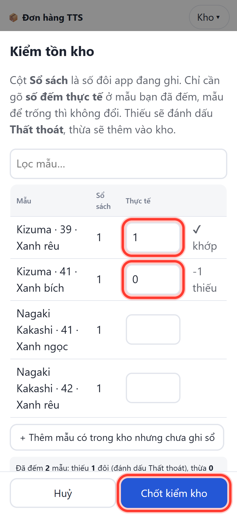
- Bấm "☑ Kiểm kho". Cột "Sổ sách" = số app đang ghi.
- Đếm hàng thật, gõ số vào cột "Thực tế". Mẫu chưa đếm thì để trống.
- App báo khớp / thiếu / thừa. Xong bấm "Chốt kiểm kho".
- Từ ngày 25 hàng tháng, app nhắc nếu chưa kiểm kho.
Đóng xong đơn: bấm nút xanh "Đã đóng xong"
Bấm nhầm: bấm "Hoàn tác" ngay
Thiếu hàng: bấm "Hết hàng"
Cần hỏi shop: bấm "Nhắn tin"
Xem lời đọc của video (dạng văn bản)
Xin chào chị. Video này hướng dẫn dùng app đơn hàng trên điện thoại, dành cho kho. Chị chỉ cần làm theo từng bước.
Bước một. Mở app. Gõ mật khẩu của kho. Rồi bấm nút xanh Đăng nhập. Điện thoại sẽ tự nhớ, lần sau không cần gõ lại.
Bước hai. Mở app là vào ngay màn hình Cần đóng. Dòng trên cùng cho biết còn bao nhiêu đơn, bao nhiêu đôi cần đóng. Ở dưới đáy có ba nút: Cần đóng, Đơn hàng, và Tồn kho. Số màu đỏ là số đơn đang chờ.
Bước ba. Bấm vào chữ Xem danh sách lấy hàng. App liệt kê mỗi mẫu, size, màu, cần lấy mấy đôi. Chị đi lấy một lượt cho nhanh.
Bước bốn. Mỗi khung là một đơn. Chữ to là mã đơn. Bên dưới là tên mẫu, size và màu. Nếu có đồ đóng kèm, app ghi trong ô màu vàng. Đóng hàng xong, chị bấm nút xanh Đã đóng xong.
Bước năm. Sau khi bấm, app hiện một thông báo màu đen ở dưới. Nếu chị bấm nhầm, bấm ngay nút trắng Bấm nhầm, Hoàn tác. Đơn sẽ quay lại như cũ.
Bước sáu. Đơn có nhiều đôi thì mỗi đôi có một ô vuông. Lấy được đôi nào, chị tick vào ô đó. Đôi nào không có hàng, bấm Hết hàng ở ngay đôi đó. Đủ hết rồi thì bấm nút xanh Đã đóng xong.
Bước bảy. Kéo xuống cuối trang, có khung màu xanh lá. Đây là các đơn chị đã đóng hôm nay. Nhìn vào là biết hôm nay làm được bao nhiêu. Muốn sửa đơn nào, bấm Hoàn tác ở đơn đó.
Bước tám. Cần hỏi shop về một đơn, chị bấm Nhắn tin ở đơn đó. Có sẵn các câu như Không có hàng. Chị bấm chọn, hoặc tự gõ. Rồi bấm nút xanh Gửi.
Bước chín. Bấm nút Đơn hàng ở dưới đáy. Đơn đã đóng có màu xanh lá, và nhãn Đã đóng. Khi giao hàng cho bên vận chuyển, chị bấm Đã giao.
Bước mười. Bấm nút Tồn kho ở dưới đáy. Có ba nút lớn. Trả hàng về, khi khách trả hàng. Nhập hàng mới, khi có hàng mới về. Và Kiểm kho, để đếm lại hàng cuối tháng.
Bước mười một. Khi khách trả hàng, bấm Trả hàng về. Gõ mã đơn, rồi bấm Thêm mã. App tự hiện mẫu, size, màu. Chọn Tốt nếu hàng còn dùng được, chọn Lỗi nếu hàng hỏng. Cuối cùng bấm nút xanh Lưu hàng hoàn.
Bước mười hai. Khi có hàng mới về, bấm Nhập hàng mới. Chọn mẫu, gõ màu. Ở các ô size, gõ số đôi. Ví dụ size bốn mốt có ba đôi, thì gõ số ba vào ô bốn mốt. Rồi bấm Lưu vào kho.
Bước mười ba. Cuối tháng, bấm Kiểm kho. Cột Sổ sách là số app đang ghi. Chị đếm hàng thật, rồi gõ số vào cột Thực tế. Mẫu nào chưa đếm thì để trống. Xong bấm nút xanh Chốt kiểm kho. Từ ngày hai mươi lăm, app sẽ nhắc nếu chưa kiểm.
Chị nhớ bốn điều. Một: đóng xong đơn thì bấm nút xanh Đã đóng xong. Hai: bấm nhầm thì bấm Hoàn tác. Ba: thiếu hàng thì bấm Hết hàng. Bốn: cần hỏi shop thì bấm Nhắn tin. Cảm ơn chị đã xem.